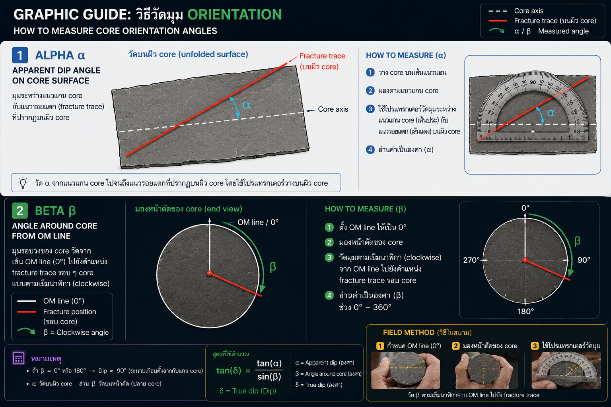

Convert Alpha / Beta to True Dip and Dip Direction with borehole inclination correction.
Full 3D mode: ใช้กับหลุมเอียงได้ โดยต้องกรอก Hole Azimuth และ Hole Inclination เพิ่มด้วย
Graphic Guide

Calculator Input
Apparent dip angle
Clockwise from OM line
Azimuth of OM / reference line
Downhole direction azimuth
0° horizontal, 90° vertical
β use-
True Dip-
Dip Direction-
Strike RHR-
Strike Alt.-
Mode3D
Calculation Note
Coordinate convention: NED system, azimuth clockwise from North, inclination = 0° horizontal and 90° vertical downward. Process: alpha/beta → local plane normal → rotate using hole axis + OM reference → world normal → true dip/dip direction.